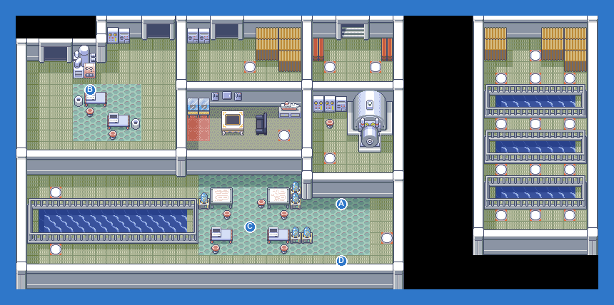

Follow the panels; a Master Ball sits in one of the side rooms behind an Electrode pair.
| AHorizon GRUNT: Zubat LV31Poison; Carvanha LV31WaterDark |
| BHorizon GRUNT: Zubat LV32Poison |
| CHorizon GRUNT: Carvanha LV32WaterDark |
| DHorizon GRUNT: Poochyena LV31Dark; Zubat LV31Poison |